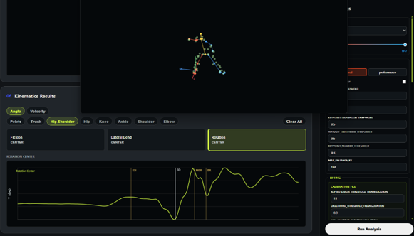
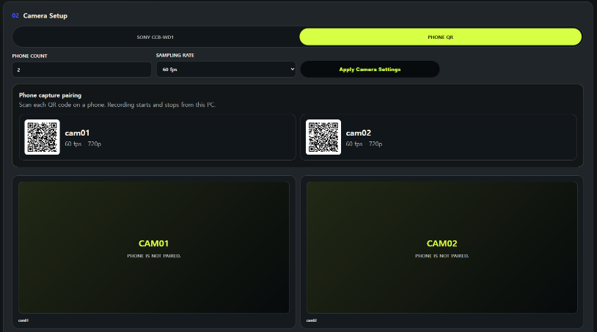
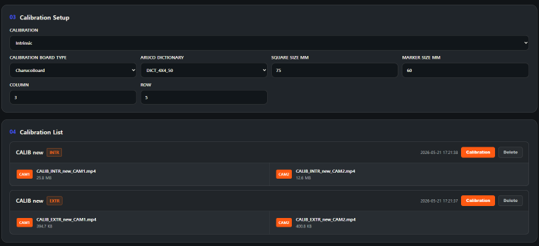
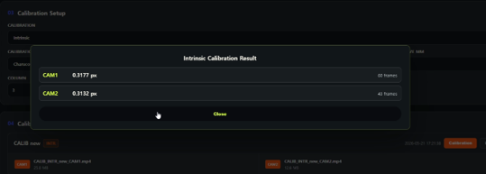
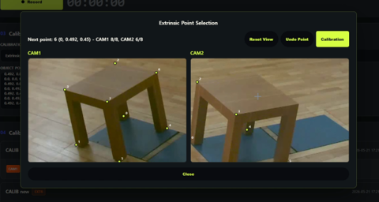
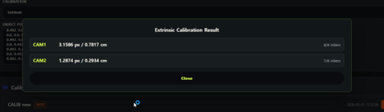
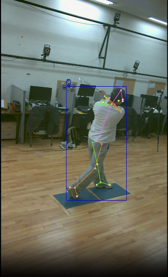
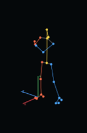
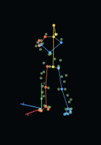
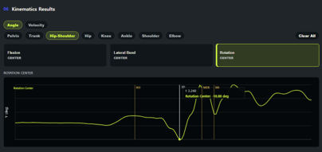

Project 1. 3D Pose Analysis Tool
Objective. 최소 2대의 휴대폰 카메라를 이용한 markerless motion analysis tool 개발.
Approach. PC에서 QR pairing으로 휴대폰 카메라를 연결하고, synchronized capture 이후 pose estimation, triangulation, filtering, marker augmentation, OpenSim inverse kinematics까지 연결했습니다.
Approach. PC에서 QR pairing으로 휴대폰 카메라를 연결하고, synchronized capture 이후 pose estimation, triangulation, filtering, marker augmentation, OpenSim inverse kinematics까지 연결했습니다.
Project 1 Visual Tabs










Pipeline (6 Steps)
01a
Camera Setup
PC-based QR pairing and synchronized recording for two or more phone cameras.
Phone capture · 60fps · 720p
01b
Intrinsic Calibration
Estimate per-camera focal length, principal point, and distortion parameters.
OpenCV calibration · Charuco board
01c
Extrinsic Calibration
Align multi-camera coordinate systems by selecting corresponding 3D points.
Object point selection · World coordinate alignment
02
2D Pose Estimation
Normal mode uses YOLO-m + RTMPose-m. Performance mode uses YOLO-l + RTMPose-l.
Speed/accuracy tradeoff
03
3D Triangulation
Recover 3D coordinates from calibrated multi-view 2D keypoints and select person IDs using reprojection error.
Multi-view geometry · Reprojection error filtering
04-06
Filtering, Marker Augmentation, and IK
Remove outliers, smooth marker trajectories, augment anatomical markers, and run OpenSim inverse kinematics.
Hampel · Butterworth · OpenSim
Project 1 Video
Key Contribution
- End-to-end markerless motion analysis pipeline using only synchronized phone camera videos.
- Automatic person selection based on reprojection error to reduce matching errors in multi-person scenes.
- Two-tier pose model configuration for speed-first and accuracy-first use cases.
- Single workflow from capture to OpenSim-ready kinematic analysis.
Tech Stack
Python
TypeScript
YOLO
RTMPose
OpenCV
OpenSim
SciPy